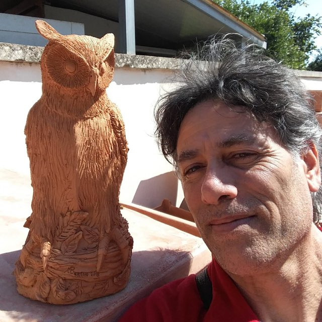
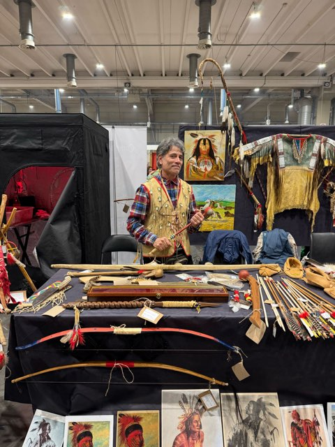

Chi è
Maurizio Bertino
Pittore e scultore salentino, autodidatta per scelta.
Nato a Bienne (Svizzera ) nel ’65, frequenta le scuole a Lausanne fino all’età di 10 anni per poi trasferirsi in Italia.
Se si volesse provare a descrivere con una sola parola le opere di Bertino si potrebbe pensare a “Uniche”, questo perchè sarebbe impossibile riprodurre più copie delle stesse a causa dell’impossibilità dell’artista di ricreare quello che è stato il sentimento e l’emozione che lo ha portato alla loro creazione.

Il percorso
Da autodidatta
Non avvertendo la necessità di studi accademici, dà pieno sfogo alla sua Arte completamente da autodidatta riscontrando un notevole successo da parte del pubblico e sopratutto dei Critici, ricevendo numerose commissioni già nei primi anni di attività.
Il popolo Salentino ha imparato ad apprezzare il suo Stile Caratteristico nelle numerose mostre in galleria. Il soggetti principale sono la Natura, rappresentata nei suoi innumerevoli aspetti, e gli Animali.
Mediante l’uso di una tecnica in continua sperimentazione ed evoluzione fatta di tratti corposi e decisi, nonché minuziosi tocchi a punta di pennello, composizioni equilibrate, colori accesi e soggetti che quasi prendono vita, l’Artista cerca l’espressione di un suo stato d’animo o un sentimento provato.

Riconoscimenti
Documentazione artistica
Parlano di lui
- Arte Mondadori
- Il Quotidiano di Lecce
- L’Elite “Selezione d’Arte Italiana”
- La Chimera Arte (Lecce)
- Galleria D’Arte Millenium Sassari
- Euroarte
Esposto a
- Mostra dell’artigianato locale (Lequile, LE)
- Galleria Maccagnani (Lecce)
- Lerici (Vincitore Primo Premio “Fare Naif Oggi”)
- Galleria La Chimera (Lecce)
- Sassari (Concorso “Colori D’Italia”)
- Fiera Dell’Arte (Galatina)
- Collettiva d’Arte “Primavera Salentina”
- Lecce Arte 2000
- Fiera “Armi e Bagagli” (Piacenza, 2025)